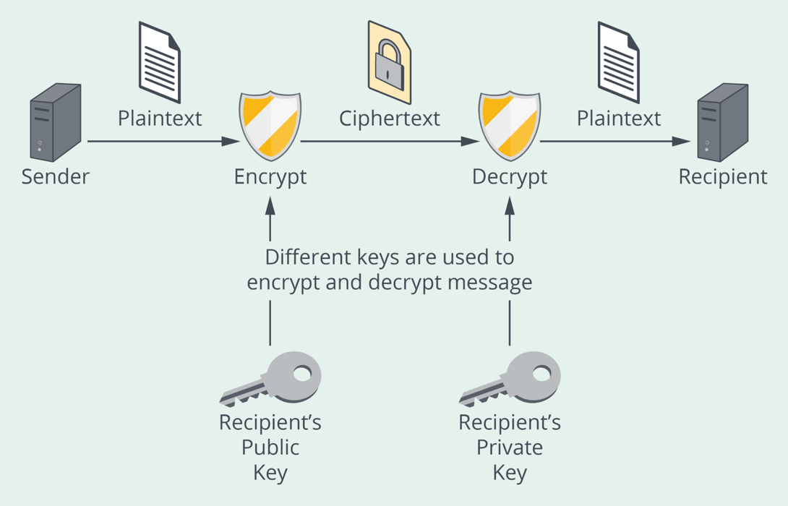

Security practitioners are concerned with confidentiality,
integrity, and availability of the systems and software throughout the life cycle.
One consideration for maintaining the continuity of operations for systems includes
the useful life of all subcomponents, especially when a system is designed to last
an extended period. One way to reduce the risk of subcomponent replacement within
the system life cycle is to embrace modular components. Modular or reusable security
components can also reduce the overall financial impact of implementing secure
system designs—especially with authentication and authorization.
Objectives
Compare and distinguish various authentication and authorization mechanisms.
Describe credential management.
Identify the principles and tools used in network security.
Describe the methods used to maintain database security.
Overview
The authentication function may be performed using single or
multiple factors. Single sign-on (SSO) is used to simplify authentication and
provide access to different resources on different systems. Federated identity
mechanisms aim to provide access to multiple systems across different enterprises.
SAML and OAuth support these concepts but have different workflows and may be better
suited for specific scenarios.
Authentication
is the process of
verifying a subject’s identity through one or more authentication factors. This
verification may involve a password (something that you know), a physical token
(something that you have), or a biometric measure (something that you are).
General authentication guidelines have been provided through
various resources, including OWASP; these include, among others:
Hashing passwords for storage versus encrypting them.
Using only safe functions to compare password hashes.
Transmitting passwords using strong transport such as TLS.
Providing generic authentication error messages.
Broken authentication, one of the OWASP Top 10, serves as a good
example:
Threat Agents and Attack Vectors. Attackers have access to hundreds of
millions of valid username and password combinations for credential stuffing,
default administrative account lists, automated brute force, and dictionary
attack tools. Session management attacks are well understood, particularly in
relation to unexpired session tokens.
Security Weakness. The prevalence of broken authentication is
widespread due to the design and implementation of most identity and access
controls. Session management is the bedrock of authentication and access
controls and is present in all stateful applications. Attackers can detect
broken authentication using manual means and exploit them using automated tools
with password lists and dictionary attacks.
Impacts. Attackers must gain access to only a few accounts, or just one
admin account, to compromise the system. Depending on the application’s domain,
this may allow money laundering, Social Security fraud, and identity theft, or
disclose legally protected highly sensitive information.
Multifactor Authentication
involves
two or more factors. Once again, the primary factors used for authentication today
include something that you know, something that you have, and something that you
are.
Single Sign-On
Single sign-on (SSO) simplifies user authentication by allowing
subjects to log into a system with a single set of credentials and subsequently gain
access to resources on multiple systems without maintaining a different set of login
credentials. Details of how SSO works may be different from one implementation to
another, but they all use the concept of a central domain through which
authentication is performed.
Various approaches and technologies have been introduced to
implement SSO and the related federation of identities for access management. In a
nutshell, eliminating multiple login systems in multiple domains requires
authentication to happen in a central domain and then be shared securely (i.e.,
using JSON signed Web Token) with other domains.
Following the flow again for clarification from a high level,
when a subject attempts to access a resource in one domain, the subject is
redirected to the central authentication server. The absence or existence of an
authentication-related cookie determines whether the user has already been
authenticated or not. If no authentication-related cookie exists, one must be
generated. If one exists, the subject will be redirected back to the resource it was
originally trying to access.
This is a simple case that omits many details, but it summarizes
the process. A discussion on SAML and OAuth will be presented later in this section.
SSO systems are composed of a credential database, a master
secret server, and a single sign-on (SSO) server.
Regardless of the approach or technologies used for this
purpose, safeguards and countermeasures must be put in place to mitigate the risk of
a single point of failure or compromise.
Federated Identity
An interesting use case for SSO is in an environment where
multiple business partners allow a subject to undergo authentication and/or
authorization in one security domain, and subsequently to access resources in others
without the need for reauthentication. The concept has existed for many years, and
has been implemented using different approaches and technologies, including Security
Assertion Markup Language (SAML) and OAuth, depending on the objectives. SAML and
OAuth have different workflows, hence one may be better suited than the other for a
given scenario.
SAML is used for both authentication and authorization between
two parties. There are two primary types of providers: a service provider (e.g.,
Office365) and an identity provider (e.g., Active Directory). The Service Provider
(SP) agrees to trust the Identity Provider (IdP) in the authentication process. This
is done through a SAML XML document sent by the IdP containing the user
authorization and authentication and then redirected to the service provider.
Relying on XML for transport, addressing security may require signing and encrypting
SAML requests.
OAuth2 is an open standard used for authorization. OAuth only
authorizes devices, API, servers with access tokens rather than credentials, and it
works over HTTPS. Unlike SAML, OAuth does not use XML, and may rely on JSON for
transport. OAuth addresses some deficiencies of SAML in certain areas (e.g., mobile
platforms).
Authorization
Upon successful authentication, authorization follows.
Authorization refers to rights and privileges granted to an individual or process
that enable access to computer resources and information assets.
Simply put, authorization is the process where requests to
access a particular resource should be granted or denied. Authorization includes the
execution rules that determine what functionality and data the user (or Principal)
may access, ensuring the proper allocation of access rights after authentication is
successful.9
When designing authorization within the software, it is
important to ensure the rights and privileges of the subject are checked before
access is granted to the objects. Access control can be designed using different
models. The three primary access control models are:
Discretionary access control (DAC). This model leaves an amount of
access control to the discretion of the object’s owner or anyone else who is
authorized to control the object’s access.
Nondiscretionary access control (NDAC). As the name implies, policies
in this category have rules that are not established at the discretion of the
user.
Mandatory access control (MAC). In this model, access control policy
decisions are made by a central authority, not by the individual owner of an
object, and the owner cannot change access rights.
Additionally, access control can be role-based (RBAC) or
designed using the resource itself.
As described by OWASP in its “Cheat Sheet Series:”
“In Role-Based Access Control (RBAC), access decisions are based
on an individual’s roles and responsibilities within the organization or user base.
“The process of defining roles is usually based on analyzing the
fundamental goals and structure of an organization and is usually linked to the
security policy. For instance, in a medical organization, the different roles of
users may include those such as a doctor, nurse, attendant, patient, etc. Obviously,
these members require different levels of access to perform their functions, but
also the types of web transactions and their allowed context vary greatly depending
on the security policy and any relevant regulations (HIPAA, Gramm-Leach-Bliley,
etc.).”
The advantages of using this methodology are:
Roles are assigned based on organizational structure with emphasis on the
organizational security policy.
It is easy to use.
It is easy to administer.
It is built into most frameworks.
It aligns with security principles like segregation of duties and least
privileges.
Problems that can be encountered while using this methodology
are:
Documentation of the roles and accesses must be strictly maintained.
Multitenancy cannot be implemented effectively unless there is a way to
associate the roles with multitenancy capability requirements (e.g., OU in
Active Directory).
There is a tendency for scope creep to occur.
It does not support data-based access control.
Areas of caution while using RBAC are:
Roles must be transferred or delegated using strict signoffs and procedures.
When users change their roles, the administrator must make sure that the earlier
access is revoked to ensure that they are assigned to roles on a need-to-know
basis.
Assurance for RBAC must be carried out using strict access control
reviews.10
Managing credentials is a complex task that includes the
generation, verification, and life cycle of credentials.
Different forms of credentials. Traditionally, credentials consist of a
user ID and password. They can come in different forms such as a smartcard or a
certificate.
Credential Management API (Windows). Developers who write for Microsoft
Windows can use the Credential Management application programming interface
(API), including Credential Management User Interface (UI) functions, to obtain
and manage credential information such as usernames and passwords. These
functions request Windows account information to be used in place of the
credentials established while logging on. Such requests typically occur when the
logon credentials do not have permissions required by the application. The
Credential Management UI functions provide interfaces with the look and feel of
the Windows UI. These functions include customizable options that add a user’s
information to the user’s credentials store.
A good credential management system should be flexible enough to
accommodate both internal and external access, differentiate roles and privileges,
and implement software security mechanisms for access control. Attacks directed
toward credential management systems will typically attempt to compromise a
credential that can be used in a privilege escalation attack. If detected, a process
must be in place to reissue credentials, which can be both expensive and
time-consuming. Security awareness training and setting appropriate management
expectations can go a long way toward preventing such attacks in the first place.
Single Sign-On (SSO)
is an important
credential-management design consideration. It is also an important
interconnectivity design consideration. While the benefit of SSO is that it
simplifies user authentication across multiple applications (i.e., it requires the
user to log in only once and then be able to access applications or resources
downstream), it requires careful thought and consideration because it often
contradicts the complete mediation design principle. SSO is often implemented using
tokens that are created upon successful authentication and then passed around
between applications.
Weak passwords in an SSO environment can pose a significant
risk. Single point of failure (SPOF) should also be considered. When implementing
SSO, along with design considerations for SPOF, necessary risk assessments should be
conducted and the risk posture identified.
X.509
Before discussing digital certificates and the X.509 standard,
asymmetric algorithms and their function should be explored. The process is shown in
this figure.

Figure 10: Using Asymmetric Algorithms to Achieve
Confidentiality
Asymmetric algorithms work based on a pair of keys: a private
key and a public key. Whichever key is used to encrypt a message, the other key will
be needed to decrypt the message. Which key is used to encrypt depends on the
objectives. To preserve the confidentiality of a message using asymmetric
algorithms, the message is encrypted using the public key of the message recipient,
so that only the message recipient—and no one else— may decrypt the message using
their private key.
If the public key is to be made available securely to those who
need it (as the name “public” implies), a mechanism for this purpose would be
needed. The public-key infrastructure used for this purpose comprises several
components, including:
Certificate authority (CA)
Registration authority (RA)
Digital certificates
X.509 is the standard for digital certificates. According to
X.509, there are several components (fields) in digital certificates, including the
public key and the validity period for the certificate. The certificate is normally
signed by the CA but may also be self-signed for specific purposes. Also keep in
mind that there are different types of certificates, including:
SSL client certificates
SSL server certificates
Object signing certificates
When certificates expire, they are added to certificate
revocation lists (CRLs). These lists could potentially be long and time consuming to
process. They potentially may also be stale. Online Certificate Status Protocol
(OCSP) may address the shortcomings of CRLs.
Flow Control
In distributed computing, the flow of information between
processes on two systems that may or may not be trusted poses security challenges.
Several security issues are related to information flow. Sensitive information
(e.g., bank account information, health information, Social Security numbers, credit
card statements) stored in a particular Web application should not be displayed on a
client browser to those who are not authorized to view that information. Protection
against malware such as spyware and Trojans means that network traffic that carries
malicious payload is not allowed to enter the network. By controlling the flow of
information or data, several threats to software can be mitigated and delivery of
valid messages guaranteed. The enforcement of security policies concerning the flow
of information to and from an application that is independent of code-level security
protection mechanisms can be useful in implementing security protection when the
code itself cannot be trusted. Firewalls, proxies, and middleware components such as
queuing infrastructure and technologies can be used to control the rate of data
transmission and allow or disallow the flow of information across trust boundaries.
Proxy Servers
By assuring that traffic always travels through a proxy (an
intermediary), various objectives may be achieved. Proxy servers may offer varying
levels of functionality. A proxy may be used as a gateway sitting between users and
the internet, in which case the proxy servers may also improve response time through
their caching capabilities.
Firewalls
Firewalls are devices or programs that control the flow of
traffic between networks and hosts. As such, they enable organizations to delineate
security zones supporting various security postures in each zone. Firewalls are
commonly used to protect the internal trusted network from the outside, or control
connectivity to specific areas, and prevent unauthorized access to sensitive systems
and resources (e.g., production systems in the cloud). Firewalls may be network
based or host based. Web application firewalls (WAFs) can provide a layer of
protection for websites against common types of attacks including SQL injection and
cross-site scripting (XSS).
For example, many enterprise networks employ firewalls to
restrict connectivity to and from the internal networks used to service more
sensitive functions, such as accounting or personnel. By employing firewalls to
control connectivity to these areas, an organization can prevent unauthorized access
to its systems and resources. Inclusion of a proper firewall provides an additional
layer of security. Organizations often need to use firewalls to meet security
requirements from mandates (e.g., FISMA); some mandates, such as the Payment Card
Industry Data Security Standard (PCI DSS), specifically require
firewalling.11
Protocols
Network protocols are a set of rules that govern the
communications between computers on a network. Rules of network protocol include
guidelines that regulate the following characteristics of a network: access method,
allowed physical topologies, types of cabling, and speed of data transfer. These are
some of the most common (present and past) network protocols:
Ethernet. This uses an access method called CSMA/CD (carrier sense
multiple access/collision detection) for flow control.
Token ring. This uses an access method that involves token passing for
flow control.
Fiber Distributed Data Interface (FDDI). This is a network protocol
that is used primarily to interconnect two or more local area networks; it uses
an access method that involves token passing for flow control.
A queue consists of a collection of data packets collectively
waiting to be transmitted by a network device using a predefined structure
methodology. These packets are bound to be routed over the network, lined up in a
sequential way with a changing header and trailer, and taken out of the queue for
transmission by a network device using some defined packet processing algorithm,
such as first in, first out (FIFO) order, or based on some priority.
Data Loss Prevention (DLP)
For a typical enterprise, millions of emails are sent and
received, and thousands of files are downloaded, saved, or transferred via various
channels or devices daily. Enterprises routinely store and transmit sensitive data
that customers, business partners, regulators, and shareholders expect them to
protect. Unfortunately, companies constantly fall victim to massive data loss, and
high-profile data leakage involving sensitive personal and corporate data continue.
Data loss could harm a company’s competitiveness and reputation and could also
invite compliance or reputational risks. Therefore, organizations should take
measures to understand the sensitive data they hold, how it is controlled, and how
to prevent data leaks.
To properly safeguard sensitive data, organizations must develop
or adopt a classification system for data (e.g., unclassified, confidential, secret,
top secret) and label all data first. Each classification level should be protected
to a level commensurate with classification (i.e., data labeled top secret should be
safeguarded to higher levels than confidential data). In addition, metrics and
policies should be created with respect to data creation, storage, transmission, and
disposal. Organizations can implement technical controls, which are often referred
to as solutions. DLP
tools include features like application firewalls and IPS/IDS to facilitate data
transmission monitoring and approval using email alerts, logging, and traffic
blocking. DLP tools may be network-centric and monitor traffic or be installed on
user devices and servers. While some software and hardware are called DLP solutions,
the effort to prevent data confidentiality and integrity issues, starting with
labeling data, including all the above-mentioned actions, and ending with technical
tool implementations, is referenced as a DLP strategy where mitigations are included
in the overall organizational efforts for data management.
Virtualization
Virtualization involves sharing underlying resources to enable
more efficient and agile use of hardware, which drives management efficiency through
reduced personnel resourcing and maintenance. Virtualization can run multiple
operating systems (guests) and their associated applications on a single physical
host. The guest is an isolated software instance that is operable with other guests
also on the host, taking advantage of the resource abstraction capabilities provided
by the hypervisor to dynamically utilize resources from the host as needed. Hardware
virtualization, or platform virtualization, refers to the creation of a virtual
machine (VM) that acts like a real computer with an operating system.
Software executed on these VMs is separated from the underlying
hardware resources. For example, a computer that is running Microsoft Windows may
host a VM that looks like a computer with the Linux operating system; Linux-based
software can be run on the VM.
Hypervisor
A is small form-factor software,
firmware, or hardware that gives the impression to the guest operating systems that
they are operating directly on the physical hardware of the host. It allows multiple
guest operating systems to share a single host and its hardware. The hypervisor
manages requests by VMs to access the physical hardware resources of the host,
abstracts them, and allows the VM to behave as if it is an independent machine.
There are two types of hypervisors:
Type 1:
It is commonly known as an embedded, native, or bare-metal hypervisor.
It works directly on the host hardware and can monitor operating systems
that run above the hypervisor.
Although small in size, its main task is sharing and managing hardware
resources between different guest operating systems.
Type 2:
It is installed after a traditional operating system and supports other
guest operating systems running above it as VMs.
It is completely dependent on the host operating system for its
operations.
Hypervisor Security
The hypervisor acts as the abstraction layer that provides the
management functions for required hardware resources among VMs.
Compromising the hypervisor enables the hacker to gain control
over the VMs as well as the host. One example of a hypervisor attack is
hyperjacking, which involves installing a rogue hypervisor that can take complete
control of a host. This may be accomplished through the use of a VM-based rootkit
that attacks the original hypervisor, inserting a modified rogue hypervisor in its
place.
Software-Defined Infrastructure
An infrastructure comprising Software Defined Networking (SDN),
Software Defined Storage (SDS), and Software Defined Compute (SDC) can provide the
opportunity for software to control the entire computing infrastructure. This would
enable the specification and configuration of the infrastructure resources that are
needed by an application to run, as part of the application’s code.
From a security perspective, it is important to recognize that
software-defined infrastructure components such as SDN are not free of risk. Some of
the issues that were associated with the traditional architectures may still apply,
and new risks due to the new attack vectors (e.g., attack on SDN controller) should
also be taken into consideration.
Containers
Both VMs and containers allow multiple apps to share the same
physical infrastructure, but they use different methods of separation. VMs use a
hypervisor that provides hardware-level isolation of resources across VMs. Each VM
sees its own virtual hardware and includes a complete guest OS in addition to the
app and its data. VMs allow different OSs, such as Linux and Windows, to share the
same physical hardware.
With containers, multiple apps share the same OS kernel instance
but are segregated from each other. The OS kernel is part of what is called the host
operating system. The host OS sits below the containers and provides OS capabilities
to them. Containers are OS-family specific; a Linux host can only run containers
built for Linux, and a Windows host can only run Windows containers. Also, a
container built for one OS family should run on any recent OS from that
family.12
VMs and containers each have their uses, and in fact some
container deployments may use the VM as opposed to running directly on the hardware.
This figure shows the VM deployment, a container deployment on “bare metal” (without
VMs), and a container deployment within a VM.
Figure 11: Virtual Machines and Container
Deployments13
Container Risks
From a security perspective, the major risks to the core
components of container technologies include:
Compromise of an image or container
Misuse of a container to attack other containers, the host OS, other hosts, and
more
Contributing to these risks are image risks, registry risks,
orchestrator risks, host OS risks, and others. For example, image risks may be due
to image vulnerabilities, image configuration defects, embedded malware, embedded
clear text secrets, or use of untrusted images.14
13 Ibid.
14 For a comprehensive discussion of other types of
risks see NIST SP 800-190;
A is the
summation of all the hardware, firmware, and/or software components of a computer
system that are critical to its security. This means that those parts of a computer
system outside the TCB must not be able to misbehave in a way that would allow them
to violate the security policy.
In contrast, the Trusted Platform Module (TPM) is a secure
cryptoprocessor. It is used to secure hardware by integrating cryptographic keys
into devices, the specification for which is written by a computer industry
consortium called Trusted Computing Group (TCG). NIST SP 800-193— Platform
Firmware Resiliency Guidelines, describes TPM and its capabilities as a
“security coprocessor capable of securely storing and using cryptographic keys and
measurements of the state of the platform. These capabilities can be used, among
other things, to secure data stored on the system, provide a strong device identity,
and to attest the state of the system.”
Some software may take advantage of the TPM chip on the
motherboard, an example of which would be Microsoft Bitlocker.
Database Security
The database is a prime target for application-level attacks.
Application-level attacks are used to exploit vulnerabilities in your data access
code to gain access to the database. If all other attack vectors are closed, then
the application’s front door becomes the path of choice for an attacker to steal,
manipulate, and destroy data.
Control Categories
Encryption. Various precautions can be taken to secure databases. One
possibility is to encrypt sensitive data in the database and find mechanisms to
protect the encryption key. This can help mitigate the risk of unauthorized
disclosure for subjects without the knowledge of the key. Many database
management systems (DBMSs) support encryption. It is recommended that software
development teams familiarize themselves with the encryption capabilities of
their DBMS. In practice, the encryption solution required to achieve the
specific security objectives may be as simple as using the capabilities offered
by the DBMS or involve more complex solutions. For example, real-time I/O
encryption and decryption of the data and log files may be achieved through
Transparent Data Encryption (TDE), which may or may not be sufficient depending
on specifics of the requirements. Note that for compliance with certain
standards, FIPS 140-2-compliant cryptographic services modules/providers may
have to be used.
Triggers. A database trigger is a reference to a special type of
procedure that automatically executes in response to the occurrence of an event.
These events include INSERT, DELETE, UPDATE, CREATE, or even DROP among other
data manipulations or data definition events. Triggers can be useful for logging
events of special interest.
Views. A database view can be thought of as a dynamic table—one that
can exclude certain columns from a table or one that spans multiple tables. This
can be valuable from a security perspective. When views are created, they may be
constructed in such a way that they will obscure the schema, which also is
valuable from a security perspective. The view is a way of portraying
information in the database. The best view for a particular purpose depends on
the information the user needs. The view can be created by arranging the
data items in a specific order, highlighting certain items, or showing only
certain items. For any database, there are a number of possible views that may
be specified. Databases with many items tend to have more possible views than
databases with few items. Often thought of as a virtual table, the view doesn’t
actually store information but rather pulls it out of one or more existing
tables. Although impermanent, a view may be accessed repeatedly by storing its
criteria in a query. As well as being a security mechanism, the view can also be
used to hide complexity and support legacy code.
Privilege management. Every database user needs certain privileges to
do their job. Granting appropriate privileges to appropriate users is the major
task in privilege management. Privilege is the key to unlock database access, so
managing privileges and roles is a vital responsibility of database
administrators. The administrator also needs to manage privileges for a user
role. The role is a named group of related privileges that is granted to users
or other roles. For databases with multiple users where many require a similar
set of access level, it is beneficial to use roles.
Programming Language Environment
There are many programming languages. Some are functional like R
for statistics, and some are object-oriented such as C#, which is popular for .NET
framework development tasks. Some are high-level and like scripting— Python for
example—while others are low level such as Embedded C and used for developing
firmware. Abstracted from language, framework, and business use case considerations,
all software development efforts require environments for writing, running, testing,
and maintaining source code. Considerations often include compilers, linkers,
packagers, debuggers, emulators, and many other productivity tools for software
developers. The combination of modern development tools into a unified development
environment is referred to as an integrated development environment (IDE).
Software design constraints, such as a mandated production
operating system, may drive language and IDE requirements. Some languages use an
intermediary runtime environment such as Java JVM and .NET Core. Using these
frameworks allows developers to write source and deploy to multiple hosting
operating systems. The intermediary runtime handles compatibility across platforms.
Automatic Memory Management and
Destruction of Unneeded Objects
Managed code refers to code written for managed programming
languages such as .NET and Java. These languages provide generalized ways to handle
the details of memory management and garbage collection. Garbage collection
facilitates the destruction of instantiated dangling objects in memory that have
gone out of scope but are not explicitly destroyed (closed), at the cost of a small
amount of overhead. This tradeoff ends error-prone tasks and allows the writing of
more compact, readable and error-free programs.
Common Language Runtime (CLR)
The common language runtime (CLR) of the .NET Framework has its
own secure execution model that isn’t bound by the limitations of the operating
system it is running on. In addition, unlike the old principal-based security, the
CLR enforces security policy based on where code is coming from rather than who the
user is. This model, called code access security, makes sense in today’s environment
because so much code is installed over the internet and even a trusted user doesn’t
know when that code is safe.
The CLR is the virtual machine component of Microsoft’s .NET
framework and is responsible for managing the execution of .NET programs. In a
process known as just-in-time (JIT) compilation, the compiled code is converted into
machine instructions that, in turn, are executed by the computer’s CPU. The CLR
provides additional services including memory management, type safety and exception
handling. All programs written for the .NET framework, regardless of programming
language, are executed by the CLR. It provides exception handling, garbage
collection, and thread management. CLR is common to all versions of the .NET
framework.
Java Virtual Machine
The Java Virtual Machine (JVM) is an example of application
virtualization; it acts as an intermediary between the Java application code and the
operating system (OS).
The Java Runtime Environment (JRE) is a bundle developed and
offered by Oracle Corporation that contains the Java Virtual Machine (JVM), class
libraries, and other components necessary to run Java applications and applets. The
JVM converts Java byte code into machine language and executes it. The JRE is both a
standalone and a web browser plug-in; the latter allows Java applets to run within a
browser. Without the JRE, Java programs and applets cannot be executed.15
Security in Java relies on multiple mechanisms that include
subjecting bytecode to verification, and enforcing defined security policies to
prevent Java code from taking disallowed actions. This is accomplished through Java
bytecode verifier and Java security manager. There is also a garbage collector,
which facilitates memory management.
Most general-purpose modern operating systems support
multitasking and manage resources (e.g., allocate/deallocate) for processes that
compete for these resources using various algorithms. Time-sharing is a common
method.
Support for disk access and filesystems is also among the common
services of many operating systems. The particulars of the filesystem implementation
may be different from one operating system to another, but reliability and
optimization in utilization of the storage space are key requirements. Centralized
and distributed filesystems may have their own advantages and security challenges
that software security professionals need to understand.
Operating systems may also include drivers for commonly used
devices; otherwise, these drivers must be obtained from other sources (e.g., device
manufacturer) before proper communication between the system and device can take
place. Assurance of the authenticity and integrity of all third-party software,
including drivers, should always be a consideration for information security
professionals.
Operating System Controls and
Services
The operating system (OS) software manages the resources of the
system (e.g., CPU and memory) and provides a well-defined interface (i.e., through
system calls) for its services. The operating system (OS) comprises various
subsystems, including those responsible for scheduling tasks, memory management, and
I/O management. A typical operating system consists of some form of bootloader,
kernel, utilities, demons/services, shell/command interpreter, and graphical and
command line interfaces.
Kernel
Known as the heart of the operating system, kernel services are
available to processes when needed.
Modern operating systems have a clear distinction made between
the kernel mode and the user mode. This implies that kernel code executes at the
highest privilege level especially when compared with user application code.
There is also the concept of the security kernel with the
responsibility for implementation of security functions such as the implementation
of the reference monitor to address the security principle of complete mediation. An
example of this is how your operating system validates whether certain operations
(e.g., read/write/execute) requested by a subject (process or user) on objects
(e.g., file within the filesystem) should be allowed.
Program Execution
Among the services provided by the operating system is the
provisioning of the ability to create a process from a program and assign resources
(e.g., memory space). One may better relate to this by thinking about how binaries
are loaded into the memory and execution is initiated.
Kernel Interrupts
Although discussion of kernel interrupts may only be relevant to
certain types of software developed today, it is important to understand that
interrupts are essential facilities that may be used to signal that an event needs
attention, allowing the operating system to take an action in response to the
occurrence of that event.
An example is using the interrupts to signal to the processor
that a key has been pressed on the keyboard. Using this mechanism, one could
understand that this would be analogous to “Tap me on the shoulder to get my
attention” when some event occurs. This could certainly present a performance
advantage over constant polling of a device regarding the occurrence of some event.
Modes of Operation
Modern microprocessors support multiple modes, including at
least a supervisor mode to provide unlimited access to system resources and a user
mode restricting any such access.
Memory Management
Kernel must manage resources for various processes and threads
of execution. Memory space of a process requires protection from interference by
subjects. From a security perspective, memory is a critical resource whose improper
management/protection can lead to not only quality issues in software but also many
common software security vulnerabilities.
Virtual Memory
Less frequently accessed memory can be temporarily stored on a
disk or other media to make that space available for use by other programs. Through
paging or segmentation techniques, the operating system may support the use of
virtual memory, that is, the usage of permanent storage space as an extension of the
main memory. This may be accomplished utilizing various algorithms used by the
operating system for this purpose.
Other Operating System
Facilities
15 National Institutes of Health; National Checklist
Program; Oracle JRE 8 UNIX STIG Ver 1, Rel 3 Checklist Details; https://nvd.nist.gov/ncp/checklist/762; retrieved June 2023.
Reusable Technologies (4.3)
Security practitioners are concerned with confidentiality, integrity, and availability of the systems and software throughout the life cycle. One consideration for maintaining the continuity of operations for systems includes the useful life of all subcomponents, especially when a system is designed to last an extended period. One way to reduce the risk of subcomponent replacement within the system life cycle is to embrace modular components. Modular or reusable security components can also reduce the overall financial impact of implementing secure system designs—especially with authentication and authorization.
Objectives
Overview
The authentication function may be performed using single or multiple factors. Single sign-on (SSO) is used to simplify authentication and provide access to different resources on different systems. Federated identity mechanisms aim to provide access to multiple systems across different enterprises. SAML and OAuth support these concepts but have different workflows and may be better suited for specific scenarios.
Authentication
is the process of verifying a subject’s identity through one or more authentication factors. This verification may involve a password (something that you know), a physical token (something that you have), or a biometric measure (something that you are).
General authentication guidelines have been provided through various resources, including OWASP; these include, among others:
Broken authentication, one of the OWASP Top 10, serves as a good example:
Multifactor Authentication
involves two or more factors. Once again, the primary factors used for authentication today include something that you know, something that you have, and something that you are.
Single Sign-On
Single sign-on (SSO) simplifies user authentication by allowing subjects to log into a system with a single set of credentials and subsequently gain access to resources on multiple systems without maintaining a different set of login credentials. Details of how SSO works may be different from one implementation to another, but they all use the concept of a central domain through which authentication is performed.
Various approaches and technologies have been introduced to implement SSO and the related federation of identities for access management. In a nutshell, eliminating multiple login systems in multiple domains requires authentication to happen in a central domain and then be shared securely (i.e., using JSON signed Web Token) with other domains.
Following the flow again for clarification from a high level, when a subject attempts to access a resource in one domain, the subject is redirected to the central authentication server. The absence or existence of an authentication-related cookie determines whether the user has already been authenticated or not. If no authentication-related cookie exists, one must be generated. If one exists, the subject will be redirected back to the resource it was originally trying to access.
This is a simple case that omits many details, but it summarizes the process. A discussion on SAML and OAuth will be presented later in this section.
SSO systems are composed of a credential database, a master secret server, and a single sign-on (SSO) server.
Regardless of the approach or technologies used for this purpose, safeguards and countermeasures must be put in place to mitigate the risk of a single point of failure or compromise.
Federated Identity
An interesting use case for SSO is in an environment where multiple business partners allow a subject to undergo authentication and/or authorization in one security domain, and subsequently to access resources in others without the need for reauthentication. The concept has existed for many years, and has been implemented using different approaches and technologies, including Security Assertion Markup Language (SAML) and OAuth, depending on the objectives. SAML and OAuth have different workflows, hence one may be better suited than the other for a given scenario.
SAML is used for both authentication and authorization between two parties. There are two primary types of providers: a service provider (e.g., Office365) and an identity provider (e.g., Active Directory). The Service Provider (SP) agrees to trust the Identity Provider (IdP) in the authentication process. This is done through a SAML XML document sent by the IdP containing the user authorization and authentication and then redirected to the service provider. Relying on XML for transport, addressing security may require signing and encrypting SAML requests.
OAuth2 is an open standard used for authorization. OAuth only authorizes devices, API, servers with access tokens rather than credentials, and it works over HTTPS. Unlike SAML, OAuth does not use XML, and may rely on JSON for transport. OAuth addresses some deficiencies of SAML in certain areas (e.g., mobile platforms).
Authorization
Upon successful authentication, authorization follows. Authorization refers to rights and privileges granted to an individual or process that enable access to computer resources and information assets.
Simply put, authorization is the process where requests to access a particular resource should be granted or denied. Authorization includes the execution rules that determine what functionality and data the user (or Principal) may access, ensuring the proper allocation of access rights after authentication is successful.9
When designing authorization within the software, it is important to ensure the rights and privileges of the subject are checked before access is granted to the objects. Access control can be designed using different models. The three primary access control models are:
Additionally, access control can be role-based (RBAC) or designed using the resource itself.
As described by OWASP in its “Cheat Sheet Series:”
“In Role-Based Access Control (RBAC), access decisions are based on an individual’s roles and responsibilities within the organization or user base.
“The process of defining roles is usually based on analyzing the fundamental goals and structure of an organization and is usually linked to the security policy. For instance, in a medical organization, the different roles of users may include those such as a doctor, nurse, attendant, patient, etc. Obviously, these members require different levels of access to perform their functions, but also the types of web transactions and their allowed context vary greatly depending on the security policy and any relevant regulations (HIPAA, Gramm-Leach-Bliley, etc.).”
The advantages of using this methodology are:
Problems that can be encountered while using this methodology are:
Areas of caution while using RBAC are:
9 OWASP Foundation; “OWASP Cheat Sheet Series; https://cheatsheetseries.owasp.org/cheatsheets/Authorization_Cheat_Sheet.html; retrieved June 2023.
10 Ibid.
Credential Management
Managing credentials is a complex task that includes the generation, verification, and life cycle of credentials.
A good credential management system should be flexible enough to accommodate both internal and external access, differentiate roles and privileges, and implement software security mechanisms for access control. Attacks directed toward credential management systems will typically attempt to compromise a credential that can be used in a privilege escalation attack. If detected, a process must be in place to reissue credentials, which can be both expensive and time-consuming. Security awareness training and setting appropriate management expectations can go a long way toward preventing such attacks in the first place.
Single Sign-On (SSO)
is an important credential-management design consideration. It is also an important interconnectivity design consideration. While the benefit of SSO is that it simplifies user authentication across multiple applications (i.e., it requires the user to log in only once and then be able to access applications or resources downstream), it requires careful thought and consideration because it often contradicts the complete mediation design principle. SSO is often implemented using tokens that are created upon successful authentication and then passed around between applications.
Weak passwords in an SSO environment can pose a significant risk. Single point of failure (SPOF) should also be considered. When implementing SSO, along with design considerations for SPOF, necessary risk assessments should be conducted and the risk posture identified.
X.509
Before discussing digital certificates and the X.509 standard, asymmetric algorithms and their function should be explored. The process is shown in this figure.
Figure 10: Using Asymmetric Algorithms to Achieve Confidentiality
Asymmetric algorithms work based on a pair of keys: a private key and a public key. Whichever key is used to encrypt a message, the other key will be needed to decrypt the message. Which key is used to encrypt depends on the objectives. To preserve the confidentiality of a message using asymmetric algorithms, the message is encrypted using the public key of the message recipient, so that only the message recipient—and no one else— may decrypt the message using their private key.
If the public key is to be made available securely to those who need it (as the name “public” implies), a mechanism for this purpose would be needed. The public-key infrastructure used for this purpose comprises several components, including:
X.509 is the standard for digital certificates. According to X.509, there are several components (fields) in digital certificates, including the public key and the validity period for the certificate. The certificate is normally signed by the CA but may also be self-signed for specific purposes. Also keep in mind that there are different types of certificates, including:
When certificates expire, they are added to certificate revocation lists (CRLs). These lists could potentially be long and time consuming to process. They potentially may also be stale. Online Certificate Status Protocol (OCSP) may address the shortcomings of CRLs.
Flow Control
In distributed computing, the flow of information between processes on two systems that may or may not be trusted poses security challenges. Several security issues are related to information flow. Sensitive information (e.g., bank account information, health information, Social Security numbers, credit card statements) stored in a particular Web application should not be displayed on a client browser to those who are not authorized to view that information. Protection against malware such as spyware and Trojans means that network traffic that carries malicious payload is not allowed to enter the network. By controlling the flow of information or data, several threats to software can be mitigated and delivery of valid messages guaranteed. The enforcement of security policies concerning the flow of information to and from an application that is independent of code-level security protection mechanisms can be useful in implementing security protection when the code itself cannot be trusted. Firewalls, proxies, and middleware components such as queuing infrastructure and technologies can be used to control the rate of data transmission and allow or disallow the flow of information across trust boundaries.
Proxy Servers
By assuring that traffic always travels through a proxy (an intermediary), various objectives may be achieved. Proxy servers may offer varying levels of functionality. A proxy may be used as a gateway sitting between users and the internet, in which case the proxy servers may also improve response time through their caching capabilities.
Firewalls
Firewalls are devices or programs that control the flow of traffic between networks and hosts. As such, they enable organizations to delineate security zones supporting various security postures in each zone. Firewalls are commonly used to protect the internal trusted network from the outside, or control connectivity to specific areas, and prevent unauthorized access to sensitive systems and resources (e.g., production systems in the cloud). Firewalls may be network based or host based. Web application firewalls (WAFs) can provide a layer of protection for websites against common types of attacks including SQL injection and cross-site scripting (XSS).
For example, many enterprise networks employ firewalls to restrict connectivity to and from the internal networks used to service more sensitive functions, such as accounting or personnel. By employing firewalls to control connectivity to these areas, an organization can prevent unauthorized access to its systems and resources. Inclusion of a proper firewall provides an additional layer of security. Organizations often need to use firewalls to meet security requirements from mandates (e.g., FISMA); some mandates, such as the Payment Card Industry Data Security Standard (PCI DSS), specifically require firewalling.11
Protocols
Network protocols are a set of rules that govern the communications between computers on a network. Rules of network protocol include guidelines that regulate the following characteristics of a network: access method, allowed physical topologies, types of cabling, and speed of data transfer. These are some of the most common (present and past) network protocols:
11 Paul Hoffman, Karen Scarfone; National Institute of Standards and Technology; NIST SP-800-41, Rev. 1—Guidelines on Firewalls and Firewall Policy; https://www.govinfo.gov/content/pkg/GOVPUB-C13-f52fdee3827e2f5d903fa8b4b66d4855/pdf/GOVPUB-C13f52fdee3827e2f5d903fa8b4b66d4855.pdf; retrieved June 2023.
Queuing in Flow Control
A queue consists of a collection of data packets collectively waiting to be transmitted by a network device using a predefined structure methodology. These packets are bound to be routed over the network, lined up in a sequential way with a changing header and trailer, and taken out of the queue for transmission by a network device using some defined packet processing algorithm, such as first in, first out (FIFO) order, or based on some priority.
Data Loss Prevention (DLP)
For a typical enterprise, millions of emails are sent and received, and thousands of files are downloaded, saved, or transferred via various channels or devices daily. Enterprises routinely store and transmit sensitive data that customers, business partners, regulators, and shareholders expect them to protect. Unfortunately, companies constantly fall victim to massive data loss, and high-profile data leakage involving sensitive personal and corporate data continue. Data loss could harm a company’s competitiveness and reputation and could also invite compliance or reputational risks. Therefore, organizations should take measures to understand the sensitive data they hold, how it is controlled, and how to prevent data leaks.
To properly safeguard sensitive data, organizations must develop or adopt a classification system for data (e.g., unclassified, confidential, secret, top secret) and label all data first. Each classification level should be protected to a level commensurate with classification (i.e., data labeled top secret should be safeguarded to higher levels than confidential data). In addition, metrics and policies should be created with respect to data creation, storage, transmission, and disposal. Organizations can implement technical controls, which are often referred to as solutions. DLP tools include features like application firewalls and IPS/IDS to facilitate data transmission monitoring and approval using email alerts, logging, and traffic blocking. DLP tools may be network-centric and monitor traffic or be installed on user devices and servers. While some software and hardware are called DLP solutions, the effort to prevent data confidentiality and integrity issues, starting with labeling data, including all the above-mentioned actions, and ending with technical tool implementations, is referenced as a DLP strategy where mitigations are included in the overall organizational efforts for data management.
Virtualization
Virtualization involves sharing underlying resources to enable more efficient and agile use of hardware, which drives management efficiency through reduced personnel resourcing and maintenance. Virtualization can run multiple operating systems (guests) and their associated applications on a single physical host. The guest is an isolated software instance that is operable with other guests also on the host, taking advantage of the resource abstraction capabilities provided by the hypervisor to dynamically utilize resources from the host as needed. Hardware virtualization, or platform virtualization, refers to the creation of a virtual machine (VM) that acts like a real computer with an operating system.
Software executed on these VMs is separated from the underlying hardware resources. For example, a computer that is running Microsoft Windows may host a VM that looks like a computer with the Linux operating system; Linux-based software can be run on the VM.
Hypervisor
A is small form-factor software, firmware, or hardware that gives the impression to the guest operating systems that they are operating directly on the physical hardware of the host. It allows multiple guest operating systems to share a single host and its hardware. The hypervisor manages requests by VMs to access the physical hardware resources of the host, abstracts them, and allows the VM to behave as if it is an independent machine. There are two types of hypervisors:
Hypervisor Security
The hypervisor acts as the abstraction layer that provides the management functions for required hardware resources among VMs.
Compromising the hypervisor enables the hacker to gain control over the VMs as well as the host. One example of a hypervisor attack is hyperjacking, which involves installing a rogue hypervisor that can take complete control of a host. This may be accomplished through the use of a VM-based rootkit that attacks the original hypervisor, inserting a modified rogue hypervisor in its place.
Software-Defined Infrastructure
An infrastructure comprising Software Defined Networking (SDN), Software Defined Storage (SDS), and Software Defined Compute (SDC) can provide the opportunity for software to control the entire computing infrastructure. This would enable the specification and configuration of the infrastructure resources that are needed by an application to run, as part of the application’s code.
From a security perspective, it is important to recognize that software-defined infrastructure components such as SDN are not free of risk. Some of the issues that were associated with the traditional architectures may still apply, and new risks due to the new attack vectors (e.g., attack on SDN controller) should also be taken into consideration.
Containers
Both VMs and containers allow multiple apps to share the same physical infrastructure, but they use different methods of separation. VMs use a hypervisor that provides hardware-level isolation of resources across VMs. Each VM sees its own virtual hardware and includes a complete guest OS in addition to the app and its data. VMs allow different OSs, such as Linux and Windows, to share the same physical hardware.
With containers, multiple apps share the same OS kernel instance but are segregated from each other. The OS kernel is part of what is called the host operating system. The host OS sits below the containers and provides OS capabilities to them. Containers are OS-family specific; a Linux host can only run containers built for Linux, and a Windows host can only run Windows containers. Also, a container built for one OS family should run on any recent OS from that family.12
VMs and containers each have their uses, and in fact some container deployments may use the VM as opposed to running directly on the hardware. This figure shows the VM deployment, a container deployment on “bare metal” (without VMs), and a container deployment within a VM.
12 John Morello, Karen Scarfone, Murugiah Souppaya; National Institute of Standards and Technology, NIST SP 800-190— Application Container Security Guide; https://nvlpubs.nist.gov/nistpubs/SpecialPublications/NIST.SP.800-190.pdf; retrieved June 2023.
Figure 11: Virtual Machines and Container Deployments13
Container Risks
From a security perspective, the major risks to the core components of container technologies include:
Contributing to these risks are image risks, registry risks, orchestrator risks, host OS risks, and others. For example, image risks may be due to image vulnerabilities, image configuration defects, embedded malware, embedded clear text secrets, or use of untrusted images.14
13 Ibid.
14 For a comprehensive discussion of other types of risks see NIST SP 800-190;
https://nvlpubs.nist.gov/nistpubs/SpecialPublications/NIST.SP.800-190.pdf.
Trusted Computing Base
A is the summation of all the hardware, firmware, and/or software components of a computer system that are critical to its security. This means that those parts of a computer system outside the TCB must not be able to misbehave in a way that would allow them to violate the security policy.
In contrast, the Trusted Platform Module (TPM) is a secure cryptoprocessor. It is used to secure hardware by integrating cryptographic keys into devices, the specification for which is written by a computer industry consortium called Trusted Computing Group (TCG). NIST SP 800-193— Platform Firmware Resiliency Guidelines, describes TPM and its capabilities as a “security coprocessor capable of securely storing and using cryptographic keys and measurements of the state of the platform. These capabilities can be used, among other things, to secure data stored on the system, provide a strong device identity, and to attest the state of the system.”
Some software may take advantage of the TPM chip on the motherboard, an example of which would be Microsoft Bitlocker.
Database Security
The database is a prime target for application-level attacks. Application-level attacks are used to exploit vulnerabilities in your data access code to gain access to the database. If all other attack vectors are closed, then the application’s front door becomes the path of choice for an attacker to steal, manipulate, and destroy data.
Control Categories
Note that for compliance with certain standards, FIPS 140-2-compliant cryptographic services modules/providers may have to be used.
The view can be created by arranging the data items in a specific order, highlighting certain items, or showing only certain items. For any database, there are a number of possible views that may be specified. Databases with many items tend to have more possible views than databases with few items. Often thought of as a virtual table, the view doesn’t actually store information but rather pulls it out of one or more existing tables. Although impermanent, a view may be accessed repeatedly by storing its criteria in a query. As well as being a security mechanism, the view can also be used to hide complexity and support legacy code.
Programming Language Environment
There are many programming languages. Some are functional like R for statistics, and some are object-oriented such as C#, which is popular for .NET framework development tasks. Some are high-level and like scripting— Python for example—while others are low level such as Embedded C and used for developing firmware. Abstracted from language, framework, and business use case considerations, all software development efforts require environments for writing, running, testing, and maintaining source code. Considerations often include compilers, linkers, packagers, debuggers, emulators, and many other productivity tools for software developers. The combination of modern development tools into a unified development environment is referred to as an integrated development environment (IDE).
Software design constraints, such as a mandated production operating system, may drive language and IDE requirements. Some languages use an intermediary runtime environment such as Java JVM and .NET Core. Using these frameworks allows developers to write source and deploy to multiple hosting operating systems. The intermediary runtime handles compatibility across platforms.
Automatic Memory Management and Destruction of Unneeded Objects
Managed code refers to code written for managed programming languages such as .NET and Java. These languages provide generalized ways to handle the details of memory management and garbage collection. Garbage collection facilitates the destruction of instantiated dangling objects in memory that have gone out of scope but are not explicitly destroyed (closed), at the cost of a small amount of overhead. This tradeoff ends error-prone tasks and allows the writing of more compact, readable and error-free programs.
Common Language Runtime (CLR)
The common language runtime (CLR) of the .NET Framework has its own secure execution model that isn’t bound by the limitations of the operating system it is running on. In addition, unlike the old principal-based security, the CLR enforces security policy based on where code is coming from rather than who the user is. This model, called code access security, makes sense in today’s environment because so much code is installed over the internet and even a trusted user doesn’t know when that code is safe.
The CLR is the virtual machine component of Microsoft’s .NET framework and is responsible for managing the execution of .NET programs. In a process known as just-in-time (JIT) compilation, the compiled code is converted into machine instructions that, in turn, are executed by the computer’s CPU. The CLR provides additional services including memory management, type safety and exception handling. All programs written for the .NET framework, regardless of programming language, are executed by the CLR. It provides exception handling, garbage collection, and thread management. CLR is common to all versions of the .NET framework.
Java Virtual Machine
The Java Virtual Machine (JVM) is an example of application virtualization; it acts as an intermediary between the Java application code and the operating system (OS).
The Java Runtime Environment (JRE) is a bundle developed and offered by Oracle Corporation that contains the Java Virtual Machine (JVM), class libraries, and other components necessary to run Java applications and applets. The JVM converts Java byte code into machine language and executes it. The JRE is both a standalone and a web browser plug-in; the latter allows Java applets to run within a browser. Without the JRE, Java programs and applets cannot be executed.15
Security in Java relies on multiple mechanisms that include subjecting bytecode to verification, and enforcing defined security policies to prevent Java code from taking disallowed actions. This is accomplished through Java bytecode verifier and Java security manager. There is also a garbage collector, which facilitates memory management.
Most general-purpose modern operating systems support multitasking and manage resources (e.g., allocate/deallocate) for processes that compete for these resources using various algorithms. Time-sharing is a common method.
Support for disk access and filesystems is also among the common services of many operating systems. The particulars of the filesystem implementation may be different from one operating system to another, but reliability and optimization in utilization of the storage space are key requirements. Centralized and distributed filesystems may have their own advantages and security challenges that software security professionals need to understand.
Operating systems may also include drivers for commonly used devices; otherwise, these drivers must be obtained from other sources (e.g., device manufacturer) before proper communication between the system and device can take place. Assurance of the authenticity and integrity of all third-party software, including drivers, should always be a consideration for information security professionals.
Operating System Controls and Services
The operating system (OS) software manages the resources of the system (e.g., CPU and memory) and provides a well-defined interface (i.e., through system calls) for its services. The operating system (OS) comprises various subsystems, including those responsible for scheduling tasks, memory management, and I/O management. A typical operating system consists of some form of bootloader, kernel, utilities, demons/services, shell/command interpreter, and graphical and command line interfaces.
Kernel
Known as the heart of the operating system, kernel services are available to processes when needed.
Modern operating systems have a clear distinction made between the kernel mode and the user mode. This implies that kernel code executes at the highest privilege level especially when compared with user application code.
There is also the concept of the security kernel with the responsibility for implementation of security functions such as the implementation of the reference monitor to address the security principle of complete mediation. An example of this is how your operating system validates whether certain operations (e.g., read/write/execute) requested by a subject (process or user) on objects (e.g., file within the filesystem) should be allowed.
Program Execution
Among the services provided by the operating system is the provisioning of the ability to create a process from a program and assign resources (e.g., memory space). One may better relate to this by thinking about how binaries are loaded into the memory and execution is initiated.
Kernel Interrupts
Although discussion of kernel interrupts may only be relevant to certain types of software developed today, it is important to understand that interrupts are essential facilities that may be used to signal that an event needs attention, allowing the operating system to take an action in response to the occurrence of that event.
An example is using the interrupts to signal to the processor that a key has been pressed on the keyboard. Using this mechanism, one could understand that this would be analogous to “Tap me on the shoulder to get my attention” when some event occurs. This could certainly present a performance advantage over constant polling of a device regarding the occurrence of some event.
Modes of Operation
Modern microprocessors support multiple modes, including at least a supervisor mode to provide unlimited access to system resources and a user mode restricting any such access.
Memory Management
Kernel must manage resources for various processes and threads of execution. Memory space of a process requires protection from interference by subjects. From a security perspective, memory is a critical resource whose improper management/protection can lead to not only quality issues in software but also many common software security vulnerabilities.
Virtual Memory
Less frequently accessed memory can be temporarily stored on a disk or other media to make that space available for use by other programs. Through paging or segmentation techniques, the operating system may support the use of virtual memory, that is, the usage of permanent storage space as an extension of the main memory. This may be accomplished utilizing various algorithms used by the operating system for this purpose.
Other Operating System Facilities
15 National Institutes of Health; National Checklist Program; Oracle JRE 8 UNIX STIG Ver 1, Rel 3 Checklist Details; https://nvd.nist.gov/ncp/checklist/762; retrieved June 2023.